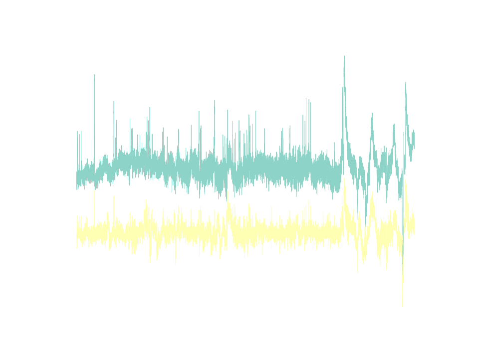
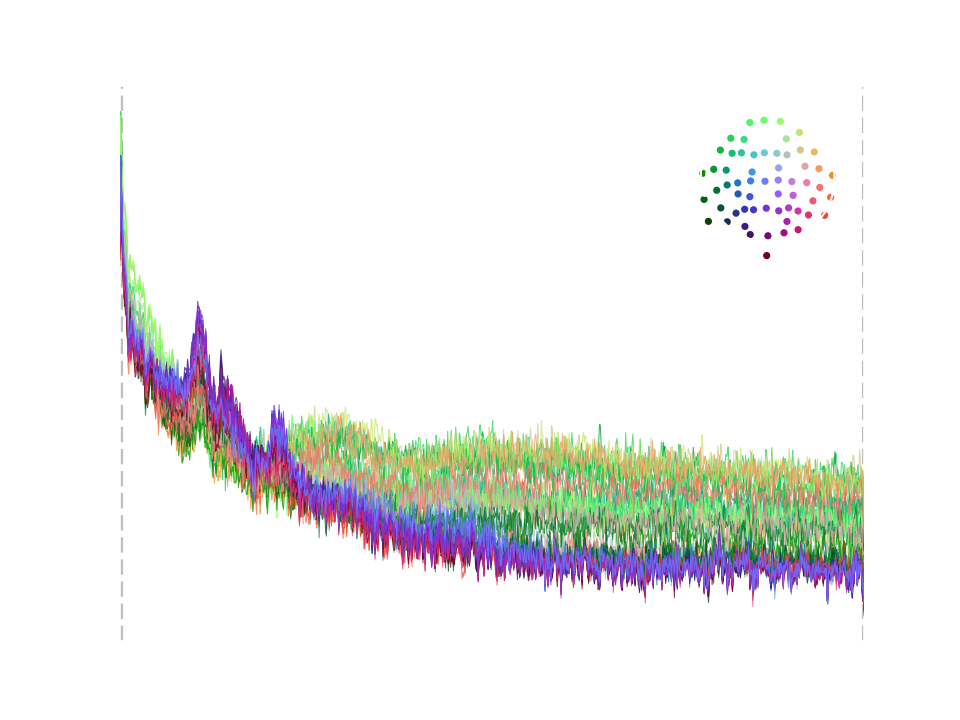
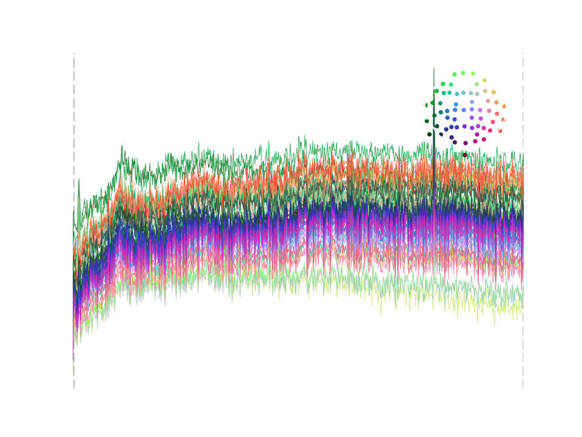
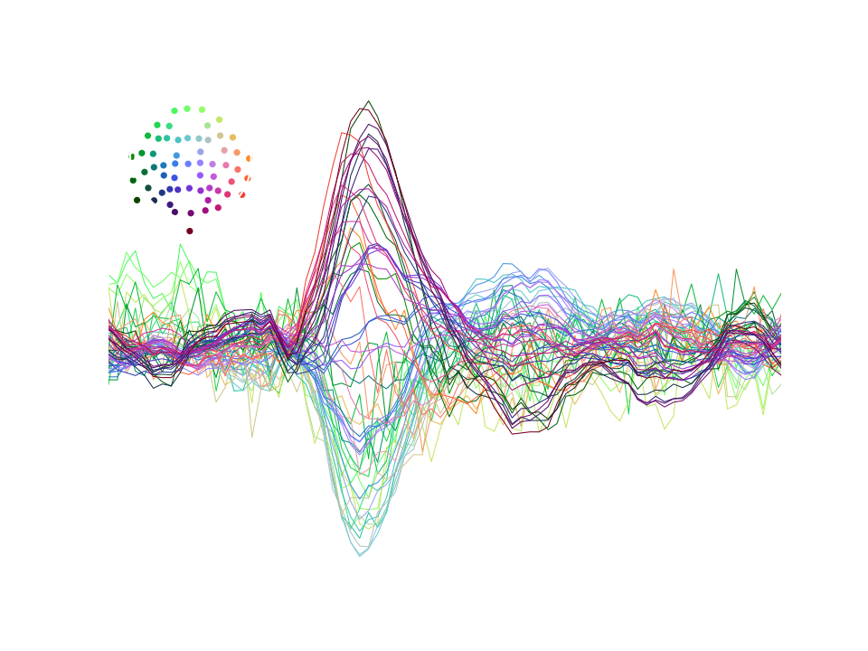

EEG preprocessing I: detrending, denoising and referencing

Electroencephalography (EEG) measures brain activity via electrodes on the scalp. Unfortunately, those electrodes also picks up other things like muscle activity and electromagnetic interference that are orders of magnitude larger than neural responses. There is a vast literature and no consensus on how to deal with this problem.
To preprocess or not to preprocess?⌗
A recent paper which got some attention argued that sophisticated preprocessing pipelines are altering data for the worse and that “EEG is better left alone” 1. While I generally agree that preprocessing should be kept as minimal as possible, I think there are some issues with this generalized statement.
The paper considers a preprocessing method to be effective if it increases the number of channels significantly differing between conditions. However, without a known ground truth, we can’t distinguish true effects from spurious findings that may result from distorting the data. Thus, increased significance does not necessarily prove a method’s superiority!
Also, the paper does not consider data of varying quality. Even if certain methods won’t improve recordings of high quality, they may still be beneficial if the data is more noisy, for example if it was recorded in a hospital without sufficient electric shielding.
For these reasons, I decided to split this guide into two parts. Part I describes a minimal set of preprocessing steps that are necessary for most EEG analyses. The procedures I suggest are robust to noise and minimize the risk of distorting the data. Part II will introduce additional procedures that may help with more noisy data.
Prerequisites⌗
To follow along with the examles, you’ll have to install several packages. I recommend creating a new environment and using pip to install:
pip install mne meegkit pyprep
We’ll use sample data provided by MNE-Python which will be downloaded automatically when you call the data_path function for the first time.
Then, we load the raw data, find events in the data (we’ll need those later) and remove everything but the EEG channels 2. Finally, we downsample the data so processing will be quicker.
from mne.io import read_raw_fif
from mne.datasets.sample import data_path
from mne import find_events
raw = read_raw_fif(data_path()/'MEG/sample/sample_audvis_raw.fif')
events = find_events(raw)
raw.pick_types(meg=False, eeg=True)
raw, events = raw.resample(150, events=events)
Channel drifts and offsets⌗
Channels differ in their conductivity with the scalp and this conductivity may also change across time, for example if the subject is sweating. This results in different and drifting baselines that can overshadow neural activity. Let’s look at two exemplar channels:
from matplotlib import pyplot as plt
plt.plot(raw.times, raw.get_data()[[3, 50], :].T*1e6, linewidth=0.4)
plt.xlabel('Time [s]')
plt.ylabel('Voltage [muV]')
plt.title('Before detrending')

A common way to deal with fluctuating baselines is to apply a high pass filter, suppressing all fluctuations at frequencies below some threshold (often 0.5 or 1 Hz). While this effectively removes channel offsets and drifts, it may also smear the signal or even introduce spurious features 3.
An alternative is to detrend the data by fitting a polynomial and subtracting the fit. Here, I use an algorithm for robust detrending that ignores outliers 4. I apply detrending twice - first using a line and then a higher-order polynomial to remove faster baseline fluctuations.
from meegkit.detrend import detrend
X = raw.get_data().T # transpose so the data is organized time-by-channels
X, _, _ = detrend(X, order=1)
X, _, _ = detrend(X, order=6)
raw._data = X.T # overwrite raw data
plt.plot(raw.times, X[:, [3, 50]], linewidth=0.4)
plt.xlabel('Time [s]')
plt.ylabel('Voltage [muV]')
plt.title('After detrending')

Removing power line noise⌗
Another ubiquitous problem is the presence of power line noise. This takes the form of an oscillation at the frequency of the alternating current signal which is 60 Hz in the US and 50 Hz in the rest of the world. To see this, we can plot the power spectral density (PSD), which shows the signals power content across frequencies.
psd = raw.compute_psd()
psd.plot()

Even though this recording is very clean, you can make out a little spike in the PSD at 60 Hz. The most common solution to power line noise is to apply a low pass or notch filter that removes all activity within the contaminated frequency band. However, to sharply separate noise and signal frequencies, the filter must have a steep transfer function which results in a long impulse response that introduces ringing artifacts into the signal.
Alternatively, one may use a spatial filter but this only works if noise and neural signal are linearly separable. Here, I use an algorithm that combines the advantages of both approaches to remove power line noise while minimizing distortions and loss of data 5.
from meegkit.dss import dss_line
X, noise = dss_line(X, fline=60, sfreq=raw.info['sfreq'], nremove=3)
raw._data = X.T
To verify that the algorithm worked as expected we visualize the power content of the removed noise. The PSD should be mostly flat, except for a spike at the power line frequency.
from mne.io import RawArray
noise = RawArray(noise.T, raw.info)
noise.compute_psd().plot()

Re-referencing to a robust average⌗
Voltage is the difference in electric potential between two points. Thus, the voltage measured at each EEG channel is relative to some common reference point. Because manufacturers use different recording references it is usually a good idea to re-reference the signals.
This is done by simply subtracting a channel or combination of channels. While this changes the absolute magnitudes, it does not alter the relations between channels. Imagine the peaks and valleys in voltage as a landscape and re-referencing as changing your standpoint. Depending on where you stand, any single point may be above or below you, but the landscape stays the same!
A common reference choice is to use the average of all channels. However, single “bad” channels, containing large artifacts may skew the average and leak those artifacts into all other channels. To prevent this from happening, we can identify and interpolate those bad channels before computing the average.
I use the random sample consensus (RANSAC) method 6 to identify bad channels. RANSAC predicts EEG channels from their neighbors and marks them as bad if their correlation with that prediction fails to meet some threshold.
from pyprep.ransac import find_bad_by_ransac
import numpy as np
bads, _ = find_bad_by_ransac(
data = raw.get_data(),
sample_rate = raw.info['sfreq'],
complete_chn_labs = np.asarray(raw.info['ch_names']),
chn_pos = np.stack([ch['loc'][0:3] for ch in raw.info['chs']]),
exclude = [],
corr_thresh = 0.9
)
Because we don’t actually want to remove anything yet (data rejection will be addressed in the next post), we copy the data before interpolating the bad channels. Then, we compute the average reference on this cleaned copy and apply it to the original data as a projection.
raw_clean = raw.copy()
raw_clean.info['bads'] = bads
raw_clean.interpolate_bads()
raw_clean.set_eeg_reference('average', projection=True) #compute the reference
raw.add_proj(raw_clean.info['projs'][0])
del raw_clean # delete the copy
raw.apply_proj() # apply the reference
Epoching the data⌗
Now we can epoch the data which means rearranging it into short segments centered around the presented stimuli. The segment duration is defined by the parameters tmin and tmax that are passed to MNE’s Epochs class.
Per default, the signal before 0, the stimulus onset, is used as a baseline which means that it’s average is subtracted from the rest of the epoch.
I think this is not a good default choice because activity in the baseline period (e.g. due to anticipation of the stimulus) can be projected into the rest of the epoch and create spurious features that look like actual brain responses. In most cases, baselining is not necessary if the data were detrended or high pass filtered.
After epoching,we can average all segments to obtain the event related potential (ERP), which is the part of the brain response, evoked by the stimuli (since spontaneous activity will average out). We can visualize the ERP to make sure that our preprocessing was effective and we have clean data.
from mne.epochs import Epochs
event_id = {"auditory/left": 1, "auditory/right": 2}
epochs = Epochs(raw, events, event_id, tmin=-0.1, tmax=0.4, baseline=None)
epochs.average().plot()

What next?⌗
We removed offsets, drifts and power-line noise, re-referenced the data to a robust average and epoched them. Now the epochs may be ready for statistical analysis or it they may require more cleaning. In the next post on preprocessing I will explain how to remove eye blink artifacts and identify and remove data segments that are beyond saving.
Footnotes⌗
-
Delorme, A. (2023). EEG is better left alone. Scientific reports, 13(1), 2372. ↩︎
-
The preprocessing steps described here apply to MEG as well - I just omitted it for the sake of simplicity. ↩︎
-
For a detailed investigation of this issue see de Cheveigné, A., & Nelken, I. (2019). Filters: when, why, and how (not) to use them. Neuron, 102(2), 280-293. ↩︎
-
The detrending algorithm is described in: de Cheveigné, A., & Arzounian, D. (2018). Robust detrending, rereferencing, outlier detection, and inpainting for multichannel data. NeuroImage, 172, 903-912. ↩︎
-
The denoising algorithm is described in: de Cheveigné, A. (2020). ZapLine: A simple and effective method to remove power line artifacts. NeuroImage, 207, 116356. ↩︎
-
RANSAC is part of another EEG preprocessing pipeline described in: Bigdely-Shamlo, N., Mullen, T., Kothe, C., Su, K. M., & Robbins, K. A. (2015). The PREP pipeline: standardized preprocessing for large-scale EEG analysis. Frontiers in neuroinformatics, 9, 16. ↩︎